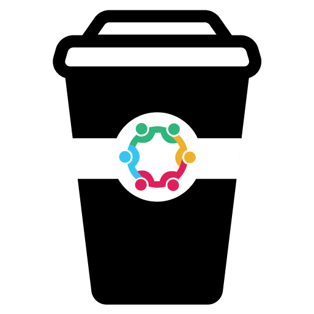

Drink rounds done right with Brew.


Launch a new round with /brew to kick things off.
Brew notifies the other members of the channel a round has started. They then have 2 minutes to join up.
You can pick from our list of preset drinks or even add your own where you can specify preferences such as milk and sugar.

Brew randomly selects someone from the round to make the drinks. They receive a message with all the info they need including preferences.